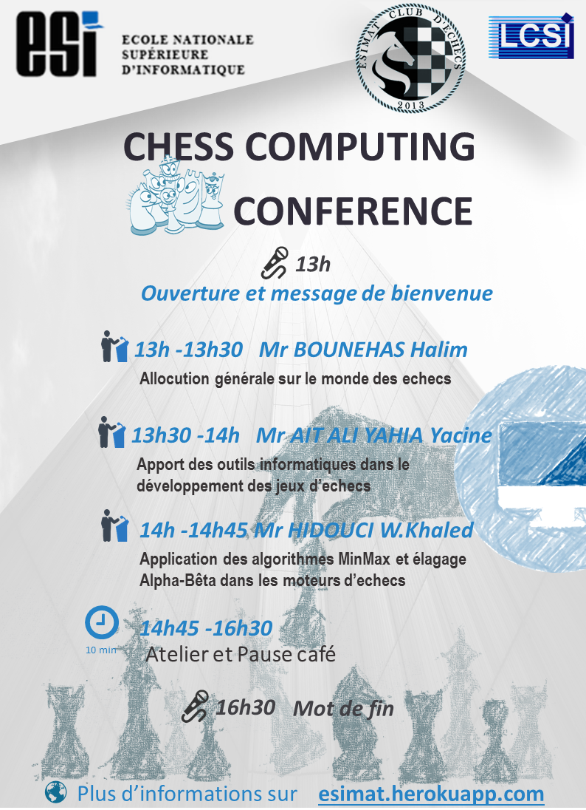

-
Deuxième conférence sur le chess computing
Deuxième conférence sur le chess computing 2016
Le club d’échec ESIMAT avec le concours du laboratoire LCSI organise la deuxième conférence débat sur le chess computing le Mardi 9 Février à 13h à l’auditorium. Une plénière dont le thème est ʺ Computers and chessʺ sera animée par Mr HANNOUN Noureddine titulaire d’un Ph.D, en Mathématiques Appliquées , à l’université d’ Alabama, USA actuellement enseignant chercheur à l’institut de mathématique de l’USTHB et ancien joueur d’échecs de haut niveau. Dans le cadre du développement d’un programme d’échecs dans notre école à savoir le projet CERI, des étudiants 2CS SIQ/SIL vont présenter des travaux théoriques et pratiques sur les algorithmes implémentés dans divers ordinateurs. Ces travaux seront évalués par un jury composé par : ZEGOUR Djamel Eddine, Pr HIDOUCI Walid, Pr AIT ALI YAHIA Yassine Dr Afin de désigner les lauréats du meilleur travail. Le public de l’ESI (enseignants, étudiants) et toute personne extérieure désirant assister et participer aux débats sont cordialement invités à cette conférence.

-
Deuxième conférence sur le chess computing
Deuxième conférence sur le chess computing 2016
Le club d’échec ESIMAT avec le concours du laboratoire LCSI organise la deuxième conférence débat sur le chess computing le Mardi 9 Février à 13h à l’auditorium. Une plénière dont le thème est ʺ Computers and chessʺ sera animée par Mr HANNOUN Noureddine titulaire d’un Ph.D, en Mathématiques Appliquées , à l’université d’ Alabama, USA actuellement enseignant chercheur à l’institut de mathématique de l’USTHB et ancien joueur d’échecs de haut niveau. Dans le cadre du développement d’un programme d’échecs dans notre école à savoir le projet CERI, des étudiants 2CS SIQ/SIL vont présenter des travaux théoriques et pratiques sur les algorithmes implémentés dans divers ordinateurs. Ces travaux seront évalués par un jury composé par : ZEGOUR Djamel Eddine, Pr HIDOUCI Walid, Pr AIT ALI YAHIA Yassine Dr Afin de désigner les lauréats du meilleur travail. Le public de l’ESI (enseignants, étudiants) et toute personne extérieure désirant assister et participer aux débats sont cordialement invités à cette conférence.
-
Troixième conférence sur le chess computing 2017
Troisième édition de la conférence débat sur le chess computing
Le club d’échec ESIMAT avec le concours du laboratoire LCSI organise la troisième conférence débat sur le chess computing le Mardi 14 Février à 13h à l’auditorium. Une plénière dont le thème est ʺ Algorithme Minimax et élagage alpha betaʺ sera animée par le professeur HIDOUCI Walid, celle-ci s’adresse particulièrement aux étudiants du cycle CPI et 1CS. Par ailleurs, en atelier des programmes simples réalisés par des étudiants 2CS SIQ/SIL seront mis à la disposition des étudiants intéressés et ce dans le cadre du lancement l’année prochaine des premières olympiades nationales des moteurs d’échecs. Dans la tradition et pour enrichir le débat chaque année le club ESIMAT invite une personnalité du monde des échecs ; cette année notre invité est Mr BOUNEHAS Halim ancien arbitre international et qui fut président de la fédération algérienne des échecs de 1998 à 2009. Durant cette période il a aussi été président de l’union méditerranéenne des échecs. Parmi ces amis on compte Anatoly KARPOV ancien champion du monde des échecs et Bachar KOUATLY actuellement président de la fédération française des échecs. Dans son allocution il abordera entre autre de l’apport des outils informatiques pour l’entrainement des joueurs de haut niveau. Le public de l’ESI (enseignants, étudiants) et toute personne extérieure désirant assister et participer aux débats sont cordialement invités à cette conférence.
